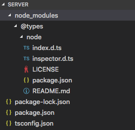
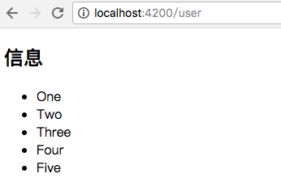
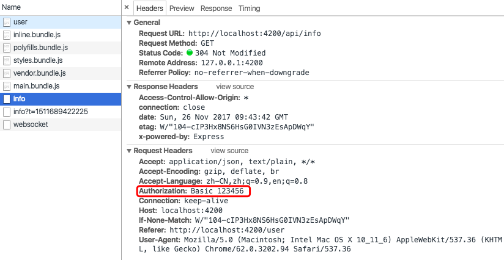

为了实现 Angular2 与服务器的通讯，我们使用 Nodejs 搭建一个简单的服务器，并使用 express 框架做相关的业务处理。
搭建环境
搭建一个简单的 Nodejs 服务器
首先初始化一个 node 项目，引入 node 类型定义文件
1 | npm init -y |
node 不支持 typescript，需要编译成 javascript。
在 package.json 同级创建一个 tsconfig.js 文件，告诉编译器如何将 typescript 编译成 javascript。

tsconfig.js
1 | { |
target： 编译之后生成的 JavaScript 版本。有三个候选项：es3、es5、es2015module：遵循的 JavaScript 模块规范。主要候选项有：commonjs、AMD和es6。emitDecoratorMetadata： 保留装饰器ourDir：编译输出 JavaScript 文件存放的文件夹include/exclude：编译时需要包含/剔除的文件夹。
另外还有其它的一些选项：
sourceMap：编译时是否生成对应的 source map 文件。这个文件主要用于前端调试。当前端 js 文件被压缩引用后，出错时可借助同名的 source map 文件查找源文件中错误位置。noImplicitAny：为 false 时，如果编译器无法根据变量的使用来判断类型时，将用any类型代替。为 true 时，将进行强类型检查，无法推断类型时，提示错误。removeComments：编译生成的 JavaScript 文件是否移除注释。
配置完成后，在 vscode 里按 ctrl + shift + b 进行编译监控。编译成功则生成 build 文件夹，build 内是编译后的 JavaScript 代码。
创建一个 server 文件夹，在文件夹内新建一个 hello_server.ts 文件，写一个简单的服务器：
1 | import * as http from 'http'; |
这段代码实现了一个简单的服务器，监听 8000 端口。收到任何相应后都会输出一个 “Hello Node” 字符串。
使用下面的代码启动服务器：
1 | node build/hello_server.js |
在地址栏中输入 localhost:8000 显示 Hello Node，则说明服务器启动成功。
安装 express 框架
express 框架提供了 web 所需的常用功能，方便我们创建 restful 服务。
安装类型定义文件
1 | npm install express --save |
在 server 文件夹中新建一个服务器配置文件，info_server.ts：
info_server.ts
1 | import * as express from 'express'; |
启动服务器：
1 | node build/info_server.js |
打开浏览器，输入 localhost:8080，屏幕显示 “这里是首页”，输入 localhost:8080/info，屏幕显示 “接收到信息查询请求”，服务器启动成功。
安装 nodemon 小工具
如果修改服务器文件(info_server.js和hello_server.js)，必须重启服务器。
为了避免每次都要重启服务器的麻烦，可以安装 nodemon 工具
1 | sudo npm install -g nodemon |
安装完成后，通过 nodemon build/info_server.js 来启动服务器，这样每次文件修改都会自动重启服务器，保证实时修改。
一个小栗子
改写服务器中的代码，实现以下功能：
在服务器端创建一个 info 对象，当用户访问根目录 / 时，返回 info 对象，访问 /:id 时，返回 id 对应的数据。
1 | import * as express from 'express'; |
HTTP 服务
Angular 的 HTTP 请求默认使用响应式服务。
- request
- get
- post
- put
- head
- delete
打开 node_modules/@angular/http/src/http.d.ts 文件看一下源码：
1 | request(url: string | Request, options?: RequestOptionsArgs): Observable<Response>; |
我们发现 Angular 已经为我们定义了多个请求方法，包括通用方法 request 以及指定类型的方法get、post等，每个方法都有一个必选的参数 url，一个可选的 RequestOptionsArgs 类型的参数，方法返回值的类型均为 Observable<Response> 流。
RequestOptionsArgs 定义了一组与请求相关的参数，
1 | export interface RequestOptionsArgs { |
通常情况下，RequestOptionsArgs 多用于传递请求头 header。
发送 HTTP 请求
新建一个组件 user，在组件内实现访问 /user 地址时，从服务端取获取数据并显示在模版上。
user.component.ts
1 | import { Component, OnInit } from '@angular/core'; |
user.component.ts 中，在构造起函数内发起 GET 请求，将返回的流数据存在本地的 dataSource 变量中。ngOnInit() 方法中通过订阅的方法，将信息存在本地变量 info 中。
注：这里 dataSource 是 Observable
user.component.html
1 | <h2>信息</h2> |
app-routing.module.ts
1 | import { UserComponent } from './user/user.component'; |
app.module.ts
1 | ... |
以上我们完成了所需要的业务逻辑
但由于服务器端口是 8080，而组件所在服务端口号是 4200，因此需要增加网络代理才能实现服务器的请求。
1. proxy.conf.json
首先，在 package.json 目录同级新建一个文件 proxy.conf.json。这样，Angular 就知道以 “/api” 开头的请求都发往 //localhost:8080，如果 Angular 中有请求地址是 /api/... 则会转到 localhost:8080/... 上：
1 | { |
2. info.server.ts
服务器文件添加 /api 路径收到请求：
info.server.ts
1 | app.get('/api/info', function (request, response) { |
3. package.json
package.json 文件需要做相应的处理，保证 start 启动时加入代理配置：
1 | { |
重启服务后生效。访问 localhost:4200/user 效果如下：

异步管道
异步管道可以接收一个流作为输入并且自动订阅输入。
1. user.component.html
首先，我们将模版中的循环经过一个异步管道管道 async。
user.component.html
1 | <ul> |
2. user.component.ts
将本地变量 info 设置为 Observable
user.component.ts
1 | import { Component, OnInit } from '@angular/core'; |
相比上面的方法，管道方法的代码相对简洁很多。
传递请求头
我们可能会在请求头中添加 Authorization 字段，下面的写法能让我们实现请求中添加请求头：
user.component.ts
1 | import { Component, OnInit } from '@angular/core'; |
这样，当我们访问 /user 路径时查看请求头，会发现多了 Authorization 字段。
